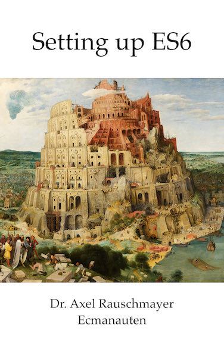

Setting up ES6

About the book
ES6 (whose official name is ECMAScript 2015) is the latest version of JavaScript. This book explains how to set up ES6 projects that are compiled to ES5 via Babel 6. It covers the following scenarios:
- Deploying ES6 in browsers via Babel and webpack.
- Deploying ES6 in Node.js, by statically or dynamically compiling it via Babel.
Required knowledge: You should already know ES6. If you don’t, consult my book “Exploring ES6” which you can read online for free.
Support
About the author
 Dr. Axel Rauschmayer specializes in JavaScript and web development. He teaches classes for Ecmanauten, blogs at 2ality.com, holds talks and workshops at conferences and organizes the MunichJS user group.
Dr. Axel Rauschmayer specializes in JavaScript and web development. He teaches classes for Ecmanauten, blogs at 2ality.com, holds talks and workshops at conferences and organizes the MunichJS user group.
Axel has been writing about ECMAScript 6 since early 2011.